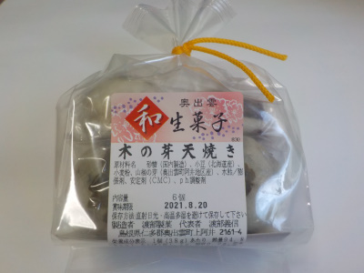
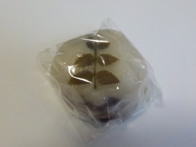
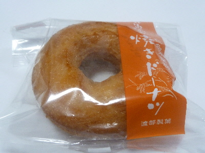

渡部製菓の木の芽天焼き
2021/08/08

「木の芽天焼き」ってお菓子があるんですね。初めて見たかも。

薄皮まんじゅうの上に山椒の葉っぱが乗っています。
山椒の葉っぱは少し苦かったです。甘いだけじゃない、ちょっと変わったおまんじゅうでした。
島根県仁多郡奥出雲町上阿井2161-4
2021/08/08

「木の芽天焼き」ってお菓子があるんですね。初めて見たかも。

薄皮まんじゅうの上に山椒の葉っぱが乗っています。
山椒の葉っぱは少し苦かったです。甘いだけじゃない、ちょっと変わったおまんじゅうでした。
2018/07/14
バニラ味のドーナッツって美味しいですね。
今までバニラ味のドーナッツって気にしたことなかったです。他のお店でもバニラ味って販売してるのかな？

このドーナッツはバニラ味が強かったです。
原材料に奥出雲山餅粉が入っているんですが、それとバニラとの相性がいいのかな？って思いました。
変な例えですが、カップアイスのスーパーカップ超バニラのような感じだって思いました。